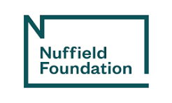
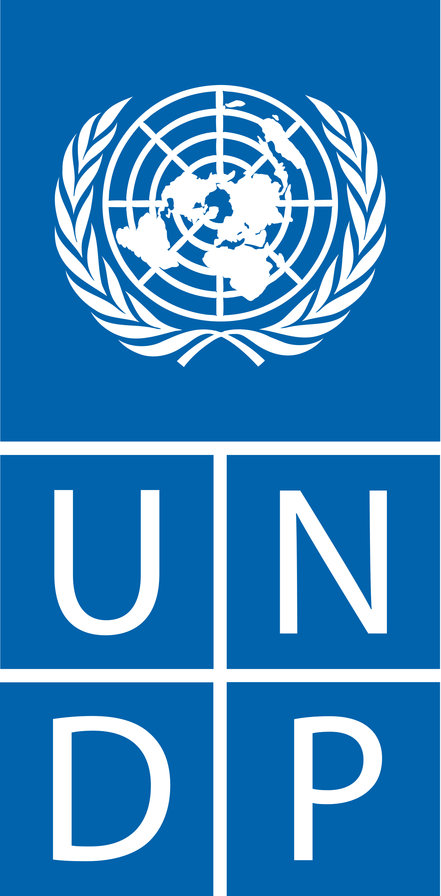
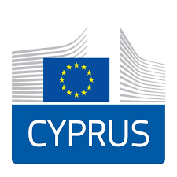
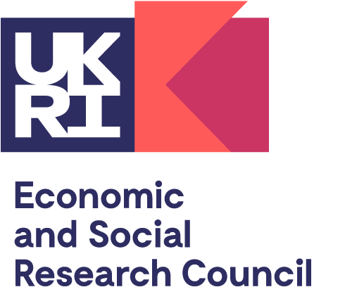
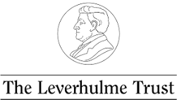
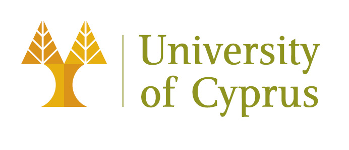
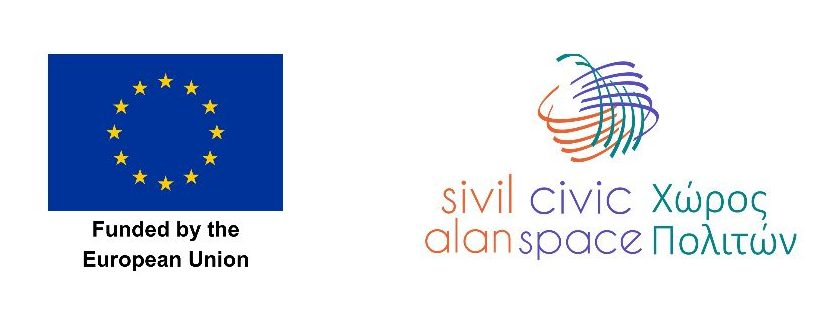
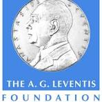
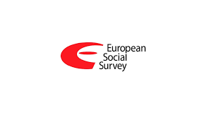
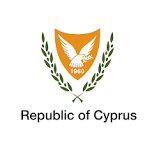

| 2007 |
RAI |
KADEM |
F2F, multistage stratified sampling. N = 800 GCs, 853 TCs. |
Psaltis, C.; Hewstone, M. |

Nuffield Foundation
New Career Development Fellowship: Intergroup contact between Greek-Cypriots and Turkish-Cypriots.
|
| 2010 |
CYMAR |
KADEM |
F2F, multistage stratified sampling. Three-wave longitudinal study. First wave N = 1,000 GCs, 1,000 TCs. |
Psaltis, C.; Lytra, E.; AHDR; Hewstone, M. |

UNDP-ACT

EU Civil Society in Action Programme
Representations of History and Intergroup Relations in Cyprus.
|
| 2015 |
UCFS |
- |
CATI random digit calling with post-stratification weights. N = 512 GCs. |
Donno, D.; Psaltis, C. |
European Studies Center
University of Pittsburgh, grant to Donno, D.
|
| 2016 |
UCFS |
- |
CATI random digit calling. N = 1,605 GCs. |
Loizides, N.; Psaltis, C.; Stefanovic, D.; Cakal, H. |

ESRC

Leverhulme Trust
RF-2014-401.
|
| 2017 |
UCFS |
PROLOGUE |
CATI random digit calling with post-stratification weights. N = 505 GCs, 600 TCs. |
Psaltis, C.; Yucel, D. |

UCY research funds

Grow Civic
Programme financed by the European Union.
|
| 2017-2018 |
UCFS |
PROLOGUE |
F2F, multistage stratified sampling. N = 811 GCs, 801 TCs. |
Psaltis, C.; Loizides, N.; Cakal, H.; Stefanovic, D.; Hewstone, M. |

A.G. Leventis
DOI 10.17605/OSF.IO/5RJ3U. The Internally Displaced in Cyprus and Return Intentions: Social Psychological, Sociological and Political Determinants.
|
| 2018-2019 |
UCFS |
- |
F2F, multistage stratified sampling. |
Vryonides, M.; Psaltis, C.; Nicolaou, A.; Georgiou, E. |

ESS Round 9

Republic of Cyprus
ESS overview
|
| 2020 |
UCFS |
LIPA |
CATI random digit calling with post-stratification weights. N = 536 GCs, 550 TCs. |
Psaltis, C.; Halperin, E.; Leshem, O.; Cakal, H.; Loizides, N. |
 LSE Hellenic Observatory
Youth and Politics in Protracted Conflicts: A comparative approach on hope for a settlement and return of IDPs.
LSE Hellenic Observatory
Youth and Politics in Protracted Conflicts: A comparative approach on hope for a settlement and return of IDPs.
|
| 2023 |
UCFS |
LIPA |
F2F, multistage stratified sampling. N = 717 GCs, 731 TCs. |
Psaltis, C.; Michael, A.; Soros, N.; Nicolaou, A.; Loizides, N.; Kovras, I.; Constantinides, A.; Dagli, I.; Cakal, H. |
Internal funding UCY
Justification mechanisms of the status quo, perceptions of transitional justice and forms of solving the Cyprus problem: A bicommunal research in the Cypriot context.
|